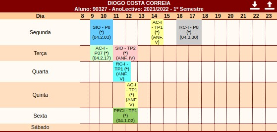
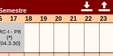

Load from PACO

Go to https://paco.ua.pt/.../c_horario_aluno.asp within Secretaria Virtual.

On the top right corner of the schedule you should find to new buttons. The one on the left is to download the Schedule Configuration file. The one on the right is to directly upload the schedule to the extension.
Note: If the buttons are missing, check if that option is checked in the Settings Page within the Popup Extension.